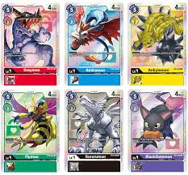
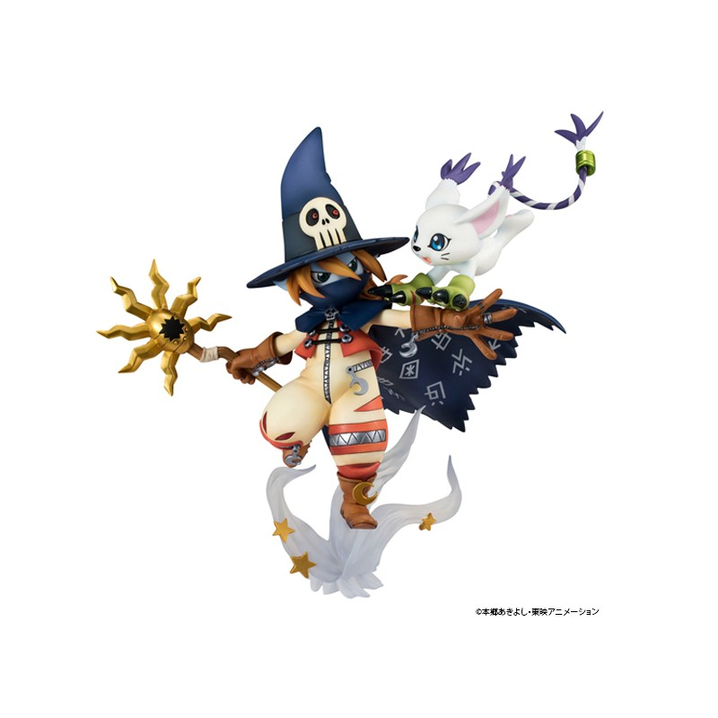

Digimon:Digital Monsters,
also known as Digimon Adventure is a long running anime series
where kids are transported to a world that is parallel to their own.This world (called the Digital World) is inhabited by creatures called digimon.
Digimon IMDB Information
This series is often compared to Pokemon due to some similar themes like children interacting with monsters.
There are many key differences between the two, the main being that the children only have one digimon, whereas in Pokemon their goal is to catch them all.
The first season of the series starts by following 7 children who create bonds with the digimon that they encounter.
Through their bond with the children, the digimon are able to digivolve to more powerful versions.
The digimon can evolve into different forms, but always return to less powerful forms.
The series spans multiple seasons, each featuring new mani characters and boasting villians in the form of humans and digimon
The 3rd season took a darker turn that I truly enjoyed. It started out with digimon existing only in the form of a card game. As the episodes went on, the main character learned that not only did digimon exist, but he created his own digimon.
For most of the series, if a digimon was defeated they would be reborn. This let the creaters look into the process of grief. That was one of the biggest changes from the themes of the first two seasons. They briefly touched on grief, but they explored it in a much deeper way.
My Favorite seasons of this Anime
The most recent imaging titled Digimon Adventure, is set in a world that is parallel to the original series. The main characters are still the same.
Digimon Adventure Synopsis
The series has expanded in the form of video games and even trading card game.The card game is also a reboot as a different verison existed in the late 90's and early 2000's.

The series has multiple video games ranging from silly racing games, to games where you raise your own digimon.There are also visual novels of the game that include a tactics based battle system.
Fans of the series can also collect figures based on popular characters. Personally, I own many of the video games and some of the cards. I've also bought small figures from blind boxes and even customized phone cases. With each new season that comes out, new merchandise is available for purchase. There is even a digimon tamogatchi for people to raise a digimon on the go.
My favorite digimon is Gatomon (known as Tailmon in the original Japanese verison)Her evolution chain has quite a few diviations allowing her to change into many different and more powerful digimon.
